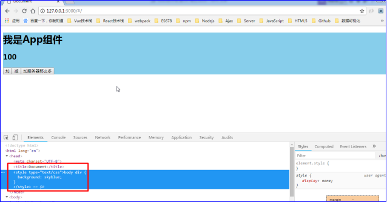
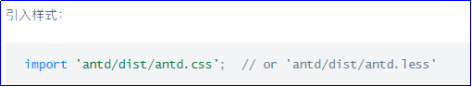
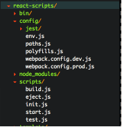
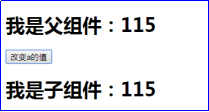
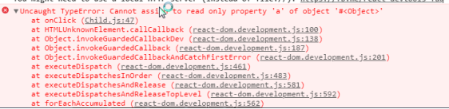

原文连接:https://www.cnblogs.com/rope/p/10740951.html
一、使用动态样式表
1.1 LESS使用
全局安装Less
npm install -g less
创建1.less文件，然后可以用lessc命令来编译这个文件：
lessc 1.less 1.css1.2 LESS和webpack结合
希望在React项目中使用less，此时就需要webpack打包的时候顺便进行less翻译
安装依赖：
npm install --save-dev less-loader
npm install --save-dev css-loader
npm install --save-dev style-loader
npm install --save-dev less
修改webpack.config.js配置：
const path = require('path');
module.exports = {
entry: "./www/app/main", //程序的主入口文件
//程序出口文件配置
output : {
//打包文件的输出地址
path: path.resolve(__dirname, "www/dist"),
//打包的文件名称
filename : "bundle.js",
},
watch:true, //让webpack监听变化，自动打包
mode : "development",
//关于模块规则的配置
module: {
rules: [
{
// 模块规则（配置loader，解析器等选项）
test: /\.js?$/, //解析的时候匹配到的都是js文件
include: [path.resolve(__dirname, "./www/app")],//翻译什么文件夹
exclude: [path.resolve(__dirname, "node_modules")], //不翻译什么文件夹
loader : "babel-loader",
options: {
presets: ["env","react"], //要翻译的ES语法
plugins: ["transform-object-rest-spread","transform-runtime"]
},
},
{
test: /\.less?$/,
include: [path.resolve(__dirname, "./www/app")],//翻译什么文件夹
exclude: [path.resolve(__dirname, "node_modules")], //不翻译什么文件夹
use : [
{loader : 'style-loader'},
{loader : 'css-loader'},
{loader :'less-loader',
options : {
strictMath: true,
noIeCompat: true
}
}
]
}
]
}
}样式会被webpack编译后出现在head标签中

1.3提炼样式表
extract-text-webpack-plugin这个插件主要是为了抽离css样式，将样式文件单独打包（打包输出的文件位置由webpack配置文件的output属性指定）。防止将样式打包在js中引起页面样式加载错乱，然后在入口HTML页面link标签引入这个打包后的样式文件即可。
下面是插件的安装方法：
https://www.npmjs.com/package/extract-text-webpack-plugin
npm install --save-dev extract-text-webpack-plugin
如果用的webpack 4代版本，请下载新版的：
npm install --save-dev extract-text-webpack-plugin@next
webpack.config.js配置：
const path = require('path');
const ExtractTextPlugin = require("extract-text-webpack-plugin");
module.exports = {
entry: "./www/app/main",
output : {
path: path.resolve(__dirname, "www/dist"),
filename : "bundle.js",
},
watch:true,
mode : "development",
module: {
rules: [
{
test: /\.js?$/,
include: [path.resolve(__dirname, "./www/app")],
exclude: [path.resolve(__dirname, "node_modules")],
loader : "babel-loader",
options: {
presets: ["env","react"], //要翻译的语法
plugins: ["transform-object-rest-spread","transform-runtime"]
},
},
{
test: /\.less?$/,
include: [path.resolve(__dirname, "./www/app")],//翻译什么文件夹
exclude: [path.resolve(__dirname, "node_modules")], //不翻译什么文件夹
use: ExtractTextPlugin.extract({
fallback: "style-loader", //编译后用什么loader来提取css文件
//指定什么loader翻译文件，这里由于源文件时.less所以选择less-loader
use: ["css-loader","less-loader"]
})
}
]
},
plugins: [
new ExtractTextPlugin("styles.css"),
]
}如果遇见报错，重新在项目依赖中安装一下webpack 4代的版本即可
index.html引入打包后的css
<link rel="stylesheet" href="dist/styles.css">二、antd组件库
官网：https://ant.design/index-cn
文档：https://ant.design/docs/react/introduce-cn
安装依赖：
npm install --save antd
方法1：import引入样式表
import 'antd/dist/antd.css';
缺点就是将antd的样式表打包到dist/bundle.js目录，合并到dist/style.css中，webpack会效率低。
方法2：去node_modules\antd\dist\antd.min.css找到文件，复制到www文件夹中的css文件夹中，在index.html引入即可。


<!DOCTYPE html>
<html lang="en">
<head>
<meta charset="UTF-8" />
<title>Document</title>
<!-- <link rel="stylesheet" href="dist/styles.css"> -->
<link rel="stylesheet" href="css/antd.min.css">
</head>
<body>
<div id="app">
</div>
</body>
<script type="text/javascript" src="dist/bundle.js"></script>
</html>在使用antd的时候，所有的组件都是大写字母开头，比如按钮
import {Button} from "antd"
<Button></Button>在App组件中小测：
import React from 'react';
import {connect} from "dva";
import "./App.less";
import PicShow from "../components/picshow/index.js";
import { Button ,DatePicker} from 'antd';
class App extends React.Component {
constructor(props) {
super(props);
}
onChange(date, dateString) {
console.log(date, dateString);
}
render() {
return (
<div className="app">
<Button type="primary">Primary</Button>
<DatePicker onChange={this.onChange.bind(this)} />
</div>
);
}
}
export default connect()(App);三、React脚手架
在开发Reat应用时，大家都是webpack + es6结合React开发，手动用npm安装各种插件，从头到尾自己搭建环境，虽然搭建环境过程也是很好的学习过程，但有时难免遇到各种问题，而且每次开发新应用，都是要从头搭建，未免太繁琐。
于是，出现了脚手架，避免开发过程中重复造轮子和做无用功，节省开发时间。
以前还要npm init一路撸到配置package.json、webpack.config.js文件，现在脚手架一行撸穿，懒人的世界如此美好。
React脚手架有很多，网上比较多人用和关注的，它们分别是：
create-react-app
react-boilerplate
react-redux-starter-kit
使用这三个脚手架的人都相当多，最突出的是create-react-app。
它是后来居上，他的开发时间都晚于后两个，但关注量却比他们还大，因为是facebook官方开发的。
当然，用得比较顺手的脚手架是create-react-app和阿里的Antd Design of React
3.1 create-react-app
安装：
npm install -g create-react-app
安装完成后，生成一个新的项目，使用下面的命令：
create-react-app my-app
创建my-app目录，然后噼里啪啦就OK啦！
npm start默认情况下，会在开发环境启动服务器，监听3000端口，会主动给你打开浏览器，可以立刻看到app的效果。
它会创建一个很纯粹的React项目，安装引用了以下依赖：
"dependencies": {
"react": "^16.2.0",
"react-dom": "^16.2.0",
"react-scripts": "1.1.1"
}没有其他依赖，所以如果要自己加一些库（UI组件什么的），就要自己安装配置了。
真的很清爽，所有的源码你将放到src目录下，什么配置文件，各种乱七八糟都不用管，你只需要专注开发就好了，create-react-app都给你处理好了。
如果你使用过webpack-dev-server或webpack搭建过开发环境，你就会发现create-react-app的开发环境也有类似webpack-dev-server的--inline --hot自动刷新的功能。
我们探究一下是怎么回事，难道create-react-app也用上了webpack-dev-server？
翻看了一下源码，没有找到webpack.config.js文件，如果有使用webpack就应该有这个文件，好奇怪。
看了一下node_modules目录，也没找到webpack相关的东西。
先源头入手，我是用npm start命令来运行项目的。就从package.json文件入手，它的内容是这样的：
"start": "react-scripts start"react-scripts又是什么？
在node_modules目录中能找到它，它果然依赖了好多工具，其中就包括'webpack'。

里面果然也有webpack的配置文件，也有好多脚本文件。
原来它是facebook开发的一个管理create-react-app服务的工具。
原来也是它让整个源码变得很整洁的。
因为它隐藏了没必要的文件，大多数人的配置都是差不多的。
除此之外，它还加入了eslint的功能。让你在开发过程中，更关注于代码，很不错。
3.2线上编译命令
这个是create-react-app的一个大亮点，它能让你的应用编译出在线上生产环境运行的代码，编译出来的文件很小，且文件名还带hash值，方便我们做cache，而且它还提供一个服务器，让我们在本地也能看到线上生产环境类似的效果，真的超级方便。
只需一行命令：
npm run build四、父子组件之间数据传递（props）
多组件的世界。
如果App组件内引入了<Child>子组件，此时App组件叫Child组件的父组件，Child是App组件的子组件。
现在要研究的是：
父组件的数据，怎么传给子组件？
子组件能不能直接更改父组件的数据值？
4.1父亲通过自定义属性传给子组件值，子组件通过this.props得到父亲传的值
App父组件中，可以给自定义标签加自定义属性，比如a={this.state.a}，表示将a属性传给儿子。
App.js父组件
import React from "react";
import Child from "./components/Child";
export default class App extends React.Component {
constructor() {
super();
this.state = {
a : 100
}
}
render() {
return <div>
<h1>我是父组件：{this.state.a}</h1>
<Child a={this.state.a} ></Child>
</div>
}
}
Child.js子组件：
import
export default class Child extends React.Component {
constructor() {
super();
}
render() {
return <div>
<h1>我是子组件：{this.props.a}</h1>
</div>
}
}4.2父组件中改变state的值，会引发子组件视图更新
如果父组件将a属性传给子组件，此时父组件中对a的改变，会影响子组件接收的a值
import React from "react";
import Child from "./components/Child";
export default class App extends React.Component {
constructor() {
super();
this.state = {
a : 100
}
}
render() {
return <div>
<h1>我是父组件：{this.state.a}</h1>
<button onClick={()=>{this.setState({a:this.state.a+1})}}>改变a的值</button>
<Child a={this.state.a} ></Child>
</div>
}
}
4.3 props是只读的
不能在子组件中直接改变父组件传过来的state值：
import React from "react";
export default class Child extends React.Component {
constructor() {
super();
}
render() {
return <div>
<h1>我是子组件：{this.props.a}</h1>
<button onClick={() => { this.props.a++ }}>改变a的值</button>
</div>
}
}props是只读的，会报错：

4.4父亲传入函数，让子组件改变父亲的值
App父组件中必须提供一个向子组件暴露的函数：
import React from "react";
import Child from "./components/Child";
export default class App extends React.Component {
constructor() {
super();
this.state = {
a : 100
}
}
setA(a){
this.setState({a})
}
render() {
return <div>
<h1>我是父组件：{this.state.a}</h1>
<button onClick={()=>{this.setState({a:this.state.a+1})}}>改变a的值</button>
<Child a={this.state.a} setA={this.setA.bind(this)}></Child>
</div>
}
}import React from "react";
export default class Child extends React.Component {
constructor() {
super();
}
render() {
return <div>
<h1>我是子组件：{this.props.a}</h1>
<button onClick={() => { this.props.setA(this.props.a+1)}}>改变a的值</button>
</div>
}
}通过state来管理所有的数据。
总结：
1）传<Child a={this.state.a}></Child> 收{this.props.a}
2）传输是单向的：父亲能传给儿子，父亲改变值，儿子会render；但儿子不能改变只读的props值；
3）如果非要改父亲的值，父亲必须传一个函数<Child setA={this.setA.bind(this)}></Child>
儿子就能调用这个函数改变父亲的state。
React极大简化了组件之间的数据传递，也就是说，如果兄弟传给兄弟，也要通过父亲。
4.5调色板-案例
App组件
import React from "react";
import Bar from "./components/Bar";
export default class App extends React.Component{
constructor(){
super();
this.state = {
r:100,
g:200,
b:255
}
}
//改变颜色的函数
setColor(k,v){
this.setState({
[k]:v
})
}
render(){
return <div>
<div style = {{
"width":"200px",
"height":"200px",
"backgroundColor":`rgb(${this.state.r},${this.state.g},${this.state.b})`
}}>
</div>
<Bar k="r" v={this.state.r} setColor={this.setColor.bind(this)}></Bar>
<Bar k="g" v={this.state.g} setColor={this.setColor.bind(this)}></Bar>
<Bar k="b" v={this.state.b} setColor={this.setColor.bind(this)}></Bar>
</div>
}
};
Bar组件：
import React from 'react';
export default class Bar extends React.Component {
constructor() {
super();
}
render() {
return <div>
<input
type="range"
max="255"
value={this.props.v}
onChange={(e)=>{this.props.setColor(this.props.k, e.target.value)}}
/>
<span>{this.props.v}</span>
</div>
}
}
4.6购物车-案例
index.html
<style type="text/css">
.grid{
float: left;
width:150px;
border: 1px solid #000;
line-height: 40px;
}
.bar{
overflow: hidden;
}
</style>
App.js
import React from "react";
import Bar from "./components/Bar.js";
export default class App extends React.Component {
constructor() {
super();
this.state = {
"arr" : [
{"id":1,"name":"空调", "price":3000, "amount":1},
{"id":2,"name":"电脑", "price":5000, "amount":1},
{"id":3,"name":"手机", "price":6000, "amount":1},
{"id":4,"name":"电视", "price":9000, "amount":1},
{"id":5,"name":"冰箱", "price":2000, "amount":1}
]
}
}
//更改数量，根据id改变amount
setAmount(id , amount){
//验收，如果amount是小于0的，那么什么都不做
if(amount < 0){return}
this.setState({
"arr" : this.state.arr.map(item=>{
//如果你遍历的这个项的id不是要改的那个id，此时返回原来的项
//如果你遍历的这个项的id是你要改变的项，此时返回改变的amount
return item.id == id ? { ...item, amount } : item
})
});
}
render(){
return <div>
{
this.state.arr.map(item=>{
return <Bar
key={item.id}
item={item}
setAmount={this.setAmount.bind(this)}
></Bar>
})
}
<h1>
总价：
{
this.state.arr.reduce((a,b)=>{
return a + b.price * b.amount;
},0)
}
</h1>
</div>
}
}
Bar.js组件：
import React from "react";
export default class Bar extends React.Component {
constructor() {
super();
}
render() {
//先将接受到的props解构出来
const {id, name, price, amount} = this.props.item;
const setAmount = this.props.setAmount;
return <div className="bar">
<div className="grid">{id}</div>
<div className="grid">{name}</div>
<div className="grid">{price}</div>
<div className="grid">
<button onClick={()=>{setAmount(id, amount - 1)}}>-</button>
{amount}
<button onClick={()=>{setAmount(id, amount + 1)}}>+</button>
</div>
<div className="grid">小计：{amount * price}</div>
</div>
}
}每一个组件仅掌握了自己需要的数据，这样的话每一个组件只需要专注于处理自己的这条数据即可。